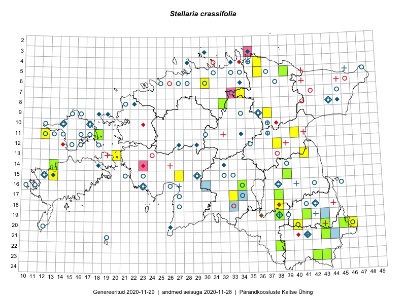

Stellaria crassifolia
Uuendatud: 2016-12-01
Kaardile koondatud taksonid: Stellaria crassifolia Ehrh.

Kaart põhineb 22 kirjel, neist vaatlusi 18 ja eksemplare 4.
Kuvatud viited 20 esimesele andmebaasikirjele, ülejäänud PlutoFis
- Peedu Saar: 2015-08-11: 13-41: ala
- Meeli Mesipuu: 2015-07-13: 13-20: ala
- Jana-Maria Habicht, Ester Valdvee: 2015-06-27: 07-34: ala
- Eeva-Maria Jeletsky, Tarmo Niitla: 2015-06-27: 11-12: ala
- Maria Abakumova, Helle Mäemets: 2015-07-03: 17-33: ala
- Ülle Jõgar, Illi Tarmu, K. Rünk: 2015-07-04: 12-38: ala
- Mari Reitalu, Oliver Parrest: 2015-07-21: 14-13: ala
- Mari Reitalu, Oliver Parrest: 2015-07-24: 15-13: ala
- Karin Kikas, Elle Rajandu: 2015-06-01: 09-37: ala
- Kaili Orav, Silvia Pihu: 2015-06-19: 05-39: ala
- Rein Kalamees, Eerik Leibak: 2016-06-16: 22-38: ala
- Tõnu Ploompuu, Eerik Leibak: 2016-07-27: 05-36: ala
- Thea Kull, Ott Luuk: 2016-08-23: 18-38: GPS punkt
- Peedu Saar, Ott Luuk: 2016-09-28: 08-32: GPS punkt
- Ott Luuk, Peedu Saar: 2016-09-28: 08-32: ala
- Ott Luuk, Thea Kull: 2016-08-23: 18-38: ala
- Kadi-Liis Kesler, Tiina Elvisto: 2015-06-27: 06-30: ala
- Kadi-Liis Kesler, Tiina Elvisto: 2015-07-28: 15-27: ala
- Peedu Saar, Thea Kull: 2015-06-17: 17-38: GPS punkt
- Peedu Saar: 2015-07-15: 15-39: GPS punkt